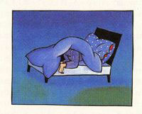

「第３夜 素数の秘密」より

ときどき夢のなかで数の悪魔が訪ねてくる。ロバートにとっては、大事件だった。たしかに老人はロバートよりなんでもよく知っていた。……いついばりはじめて、真っ赤な顔をしてどなりだすのか、まるで見当もつかなかった。しかしそれでも、まっ黒な穴にどんどんすべり落ちる夢よりは、ましだった。
ロバートは、こんど数の悪魔があらわれたら、自分だってバカじゃないことを証明するつもりだった。あいつをギャフンといわせてやらなくちゃ。０のこと、あんなに自慢してたけど、あいつだって、０とたいしてちがいない。夢に出てくる幽霊にすぎないじゃないか。ぼくが目をさませば、もうどっかに消えちゃうんだぞ。
しかし、ギャフンといわせるには、まず数の悪魔の夢を見なくちゃならない。夢を見るには、まず眠りこまなくちゃならない。とすると、ロバートは気がついた。ことはそう簡単ではない。ベッドに横になったまま眠れず、寝返りをうった。……
「どうしていつまでも寝返りをうってるんだい」と、数の悪魔がたずねた。
気がつくと、洞穴のなかにベッドがあった。
目の前には老人がすわっていて、ステッキをふりまわしている。「起きろ、ロバート。きょうは、わり算だ」
「もうはじめるの。眠りこむまで待ってくれてもよかったのに。それにさ、ぼく、わり算好きじゃないんだ」
「どうして？」
「だってさ、たし算やひき算とか、かけ算だったら、どんな計算でも答えがちゃんと出るでしょ。でも、わり算はちがう。わりきれなくて、余りが残る。すっきりしないじゃないか」
「場合によりけりだ」
「場合って、どういうこと」ロバートがたずねた。
「余りが残る場合と、残らない場合があるということだ。そこが大切なんだ。ちょっと見ただけで、わりきれるか、余りが残るか、わかる数もあるぞ」
「そうさ。偶数だと、２でわれば、いつもすっきりした答えになる。３の倍数だって、おんなじように簡単にわりきれる」
９÷３ １５÷３
「かけ算とおんなじことでしょ。ただ逆にやるんだけど」
３×５＝１５ これを逆にすると １５÷３＝５
「これくらいのことなら、数の悪魔がいなくたって、ひとりでできるよ」とロバートは言った。
しかし、言ってはならない言葉だった。老人はロバートをぐいとベッドから引きづりおろした。ひげがピクピクふるえ、鼻が真っ赤になり、顔がふくれてきたようだ。
「なんにもわかっとらんな」老人はさけんだ。「九九を知ってるくらいで、なんでもできると思ってるようだが。そんなの屁みたいなもんじゃ」
………………
「１９」と老人がつぶやいた。「１９でやってごらん。これをきれいにわってみるんだ。余りが出ないように
ロバートは考えこんだ。………………